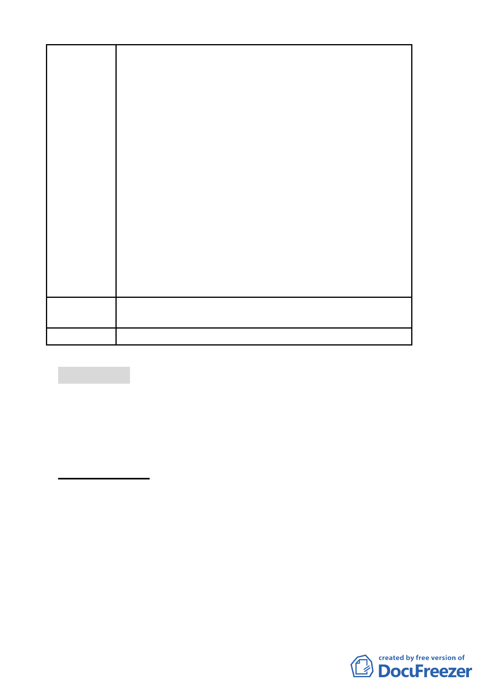

泰段臺北好好看開發案」依92年公告之都市計畫審
議，無視該地區通檢之必要性。
(三)於99年2月11日第一次都委會就其土地及建築物之使
用限制既已達初步共識(如商業區 (供商業購物中心
使用)及娛樂區(供娛樂購物中心使用)申請住宅使用
之樓地板面積不得超過法定容積之二分之一、地面層
l~3樓作指定項目使用、高度不得超過90公尺±l0公
尺…)，有否重行組成小組會議，推翻前次大會審議
共識之理？
五、民間企業配合政府政策推動「促進都市再生2010年臺
北好好看」開發案不應被視為盜匪，著眼良策混沌不
明、投資風險無法掌握，勢必將政府、產發學界及開
發商、地主先前努力付諸東流、回至原 點，不免陳
情人等戒慎恐懼必須正視問題提出拙見供相關單位
慎量，以挽政府威信及落實政策執行貫徹力。
六、敬祈鈞局酌參，俾維市府政策執行之貫徹及土地所有
權人合法權益。
建議辦法
陳請從速審查坐落臺北市中山區金泰段「促進都市再生
2010 年臺北好好看」開發計畫案。
委 員 會 決 議 所提建議業已錄案供委員審議參考。
討論事項 七
案名：修訂臺北市基隆河（中山橋至成美橋段）附近地區細部計
畫商業區（供娛樂健身使用）街廓編號 B4 基地（中山區金
泰段 24-1 等 7 筆地號）土地使用分區管制規定與都市設計
管制要點計畫案
案情概要說明：
一、 本計畫區位於「修訂台北市基隆河（中山橋至成美橋段）附
近地區細部計畫」B4 娛樂區（供娛樂健身使用）範圍內，基
地南側臨 12M 植福路 286 巷，北側臨 15M 樂群三路，面積共
計 8727 平方公尺。其現況使用為空地、本計畫原使用分區為
娛樂區（供娛樂健身使用），建蔽率 60％、容積率 200％，土
地權屬為私人所有。
二、 變更計畫緣起與目的：
宏普建設股份有限公司以符合本市「徵求參與『促進都市再生 2010
- 54 -